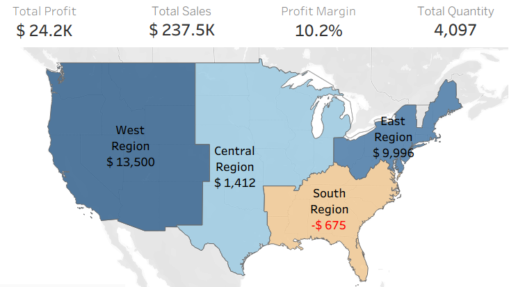

Professional Profile & Tech Stack
Industrial Engineer with a proactive profile, driven by continuous improvement and Operational Excellence. I specialize in data collection, cleaning, and interpretation to identify optimization opportunities in business processes and workflows. Experienced in developing ETL pipelines and automations using Power BI, Power Query, and SQL. I have a solid background collaborating in dynamic environments and cross-functional teams, translating complex insights into strategic actions.
Data Analysis & ETL: SQL, Python, Power Query.
Visualization: Tableau, Power BI, Advanced Excel.
Automation: n8n, VBA.

Profitability Diagnostics: Game Delivery
The Challenge: Identify why retail branches with high sales volume were operating with negative profit margins.
The Result: Through Exploratory Data Analysis (EDA), -$4.2K in hidden losses were uncovered, directly tied to destructive pricing policies in North Carolina and logistical bottlenecks in Texas.
View Full Analysis ➔
OEE Monitoring & Process Control
The Challenge: Design a monitoring system for continuous production equipment, analyzing 10,000 minute-level sensor observations to detect process inefficiencies.
The Result: Through EDA, the machine's empirical operational boundaries were discovered, revealing that although the Overall Equipment Effectiveness (OEE) is World-Class, it operates at its strict optimal level only 6.7% of the time.
View Dashboards & Analysis ➔
Interactive Trivia Bot via Telegram
The Challenge: Design an automated workflow capable of managing a trivia game with data persistence, while dynamically adapting to human unpredictability through free-text commands.
The Result: A hybrid architecture built in n8n integrating Google Sheets and semantic orchestration via Llama 3 (Groq). The system routes user intents, manages game states (lives, scores), and issues sarcastic responses to out-of-context interactions.
View Full Architecture ➔